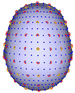
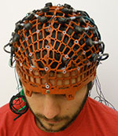

Resources

Mesh2EEG is a collection of Matlab functions for automatic calculation of the International 10-20 (yellow), 10-10 (red), and 10-5 (blue) scalp coordinates of EEG electrodes on a boundary element mesh of a human head.

GiacoWeb™ is a versatile elastomeric web that can aid in marking the locations and/or positioning EEG electrodes and/or NIRS optodes following the International 10-20, 10-10, and 10-5 scalp coordinates.